Cybernetic Engineering · GitHub profile visual preview
Final layout is rendered by GitHub from README.md. This page previews the generated SVG assets locally; live activity graphics update through GitHub Actions.

01 / Engineering profile

02 / Technology arsenal

03 / Selected work




04 / GitHub pulse

05 / Let's connect
